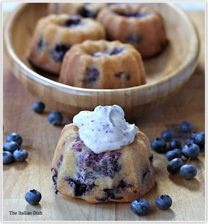

The botanical definition of a berry is a fleshy fruit produced from a single ovary. Grapes are an example. The berry is the most common type of fleshy fruit in which the entire ovary wall ripens into an edible pericarp. They may have one or more carpels. The seeds are usually embedded in the fleshy interior of the ovary, but there are some non-fleshy exceptions, such as peppers. A plant that bears berries is said to be bacciferous or baccate (a fruit that resembles a berry, whether it actually is a berry or not, can also be called "baccate"). In everyday English, "berry" is a term for any small edible fruit. These "berries" are usually juicy, round or semi-oblong, brightly coloured, sweet or sour, and do not have a stone or pit, although many seeds may be present. Many berries, such as the tomato, are edible, but others in the same family, such as the fruits of the deadly nightshade (Atropa belladonna) and the fruits of the potato (Solanum tuberosum) are poisonous to humans. Some berries, such as Capsicum, have space rather than pulp around their seeds.
The antioxidants in berries can help your body fight oxidative stress caused by free radicals that can lead to illness. Eating a diet rich in antioxidants can help improve your health, protect your skin and hair, and prevent certain diseases. All fruits and vegetables contain antioxidants, but nutrient-rich berries are some of the absolute best sources.
A few genneral health benifits all berries have:
 100 Ways to use blueberries
Support local farmers, keep it in the comunity!
Ontario berriesSources: Wikipedia